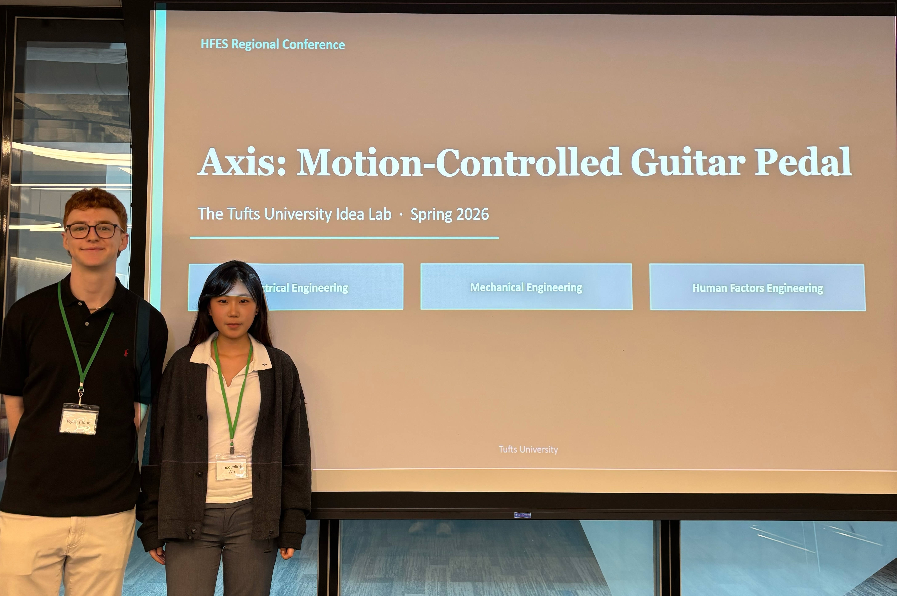
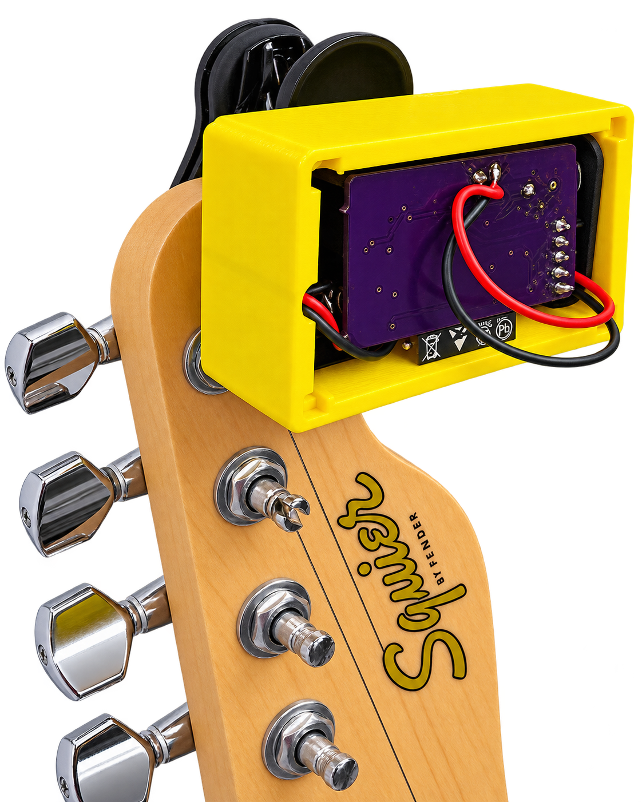
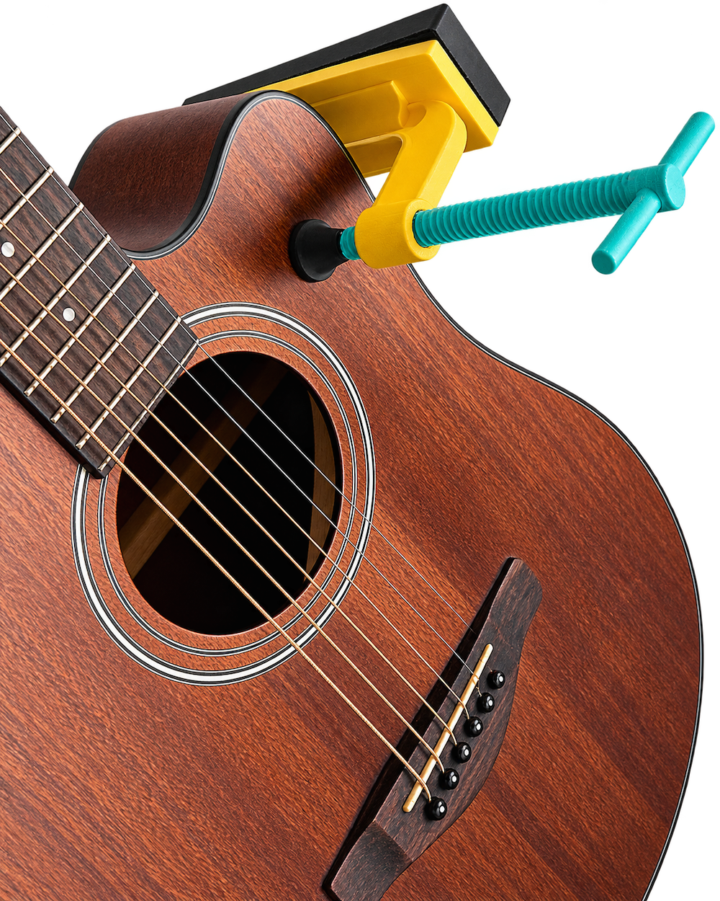
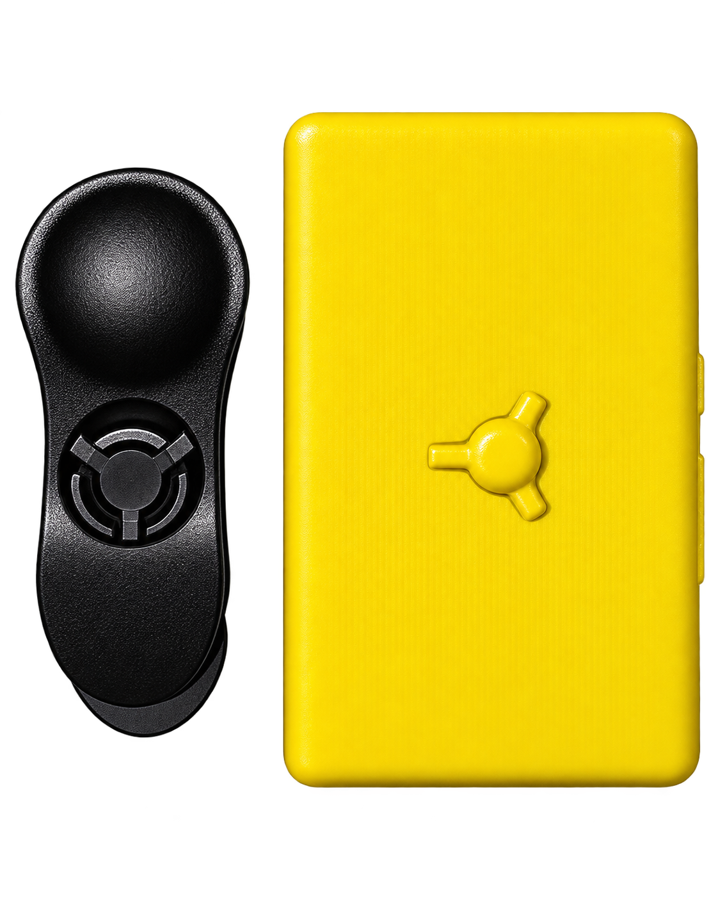
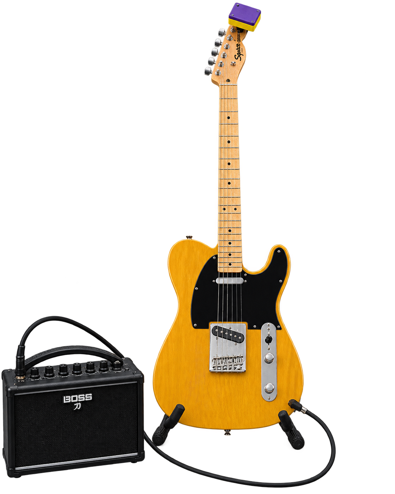

Security
Users worried that the device could detach during performance.
Project Detail
Presented at the 2026 Northeast Regional Chapter of the Human Factors and Ergonomics Society ConferenceView slides here →

Axis is a modular guitar-effects system developed at the Tufts IDEA Lab that allows musicians to control effects through movement.
Traditional guitar pedals can require musicians to look down, use a footswitch, or adjust a dial while simultaneously playing and moving on stage. Our Human Factors team studied how guitarists actually perform to understand how a motion-based controller could fit naturally into that experience.


Changing guitar effects can compete with the physical and attentional demands of performing.
Our early research found that:
The opportunity was not simply to replace a pedal—it was to create an interaction that worked with the musician’s existing movements rather than interrupting them.
We gathered approximately 30 survey responses from guitarists with pedal experience and analyzed live performances using RULA/REBA ergonomic assessment methods.
These recommendations informed the first physical prototype developed by the mechanical and electrical engineering teams.
We then tested a low-fidelity prototype with approximately five electric guitarists through 20–30 minute interviews and task-analysis sessions.

Watching musicians interact with the physical product revealed concerns that were difficult to identify before a prototype existed:
Users worried that the device could detach during performance.
Because guitarists naturally move on stage, ordinary playing motions could unintentionally change an effect.
Participants responded better to attachment methods that resembled hardware they already recognized on a guitar.
The system needed to work without requiring musicians to constantly monitor another device.
Prototype testing led us to refine the product around four Human Factors requirements:
As a Human Factors Researcher, I:
Our Human Factors research influenced Axis across two stages of development: first by defining requirements for the initial prototype, and then by testing that prototype and identifying new usability constraints.
The process helped evolve Axis from a broad idea—control guitar effects through movement—into a more grounded physical product shaped by how musicians actually move, play, and perform.

